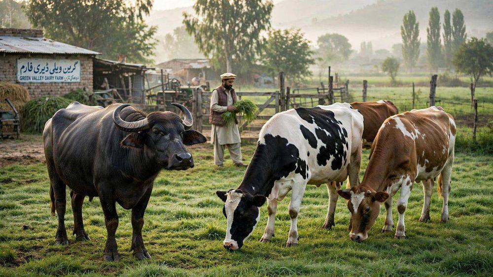

لائیوسٹاک کارڈ فیز II: 16 ارب روپے بلا سود قرض کا اعلان

پنجاب کے مویشی پال کسانوں کے لیے بڑی خوشخبری: وزیراعلیٰ پنجاب مریم نواز شریف نے لائیوسٹاک کارڈ اسکیم کے دوسرے مرحلے (فیز II) کا افتتاح کر دیا ہے۔ اس مرحلے میں کسانوں کو 16 ارب 20 کروڑ روپے کے بلا سود قرضے فراہم کیے جائیں گے تاکہ مویشیوں کی بہتر خوراک، گوشت کی پیداوار میں اضافہ اور برآمدات کو فروغ مل سکے۔
افتتاحی تقریب کی جھلکیاں
لاہور میں منعقدہ تقریب میں وزیراعلیٰ نے ڈیجیٹل طور پر لائیوسٹاک کارڈ سوائپ کر کے فیز II کا باضابطہ آغاز کیا۔ تقریب میں محکمہ لائیوسٹاک کی کاوشوں پر مبنی خصوصی دستاویزی فلم بھی دکھائی گئی۔ صوبائی وزیر لائیوسٹاک عاشق حسین کرمانی اور سیکرٹری لائیوسٹاک احمد عزیز تارڑ نے اسکیم پر تفصیلی بریفنگ دی۔
یہ فیصلہ فیز I کی نمایاں کامیابی کے بعد کیا گیا — پہلے مرحلے میں قرضوں کی وصولی کی شرح 96 فیصد رہی، جو اس بات کا ثبوت ہے کہ کسان اس سہولت کو سنجیدگی سے استعمال کر رہے ہیں۔
کسانوں کو کیا ملے گا؟
فیز II کے تحت ہر مستحق کسان کو فی جانور 27 ہزار روپے بلا سود قرض ملے گا۔ یہ رقم مویشیوں کی خوراک اور دیکھ بھال پر خرچ کی جا سکے گی:
- ونڈا (تیار خوراک): جانوروں کی متوازن غذا کے لیے۔
- سائیلج: محفوظ شدہ چارہ، خاص طور پر خشک موسم کے لیے۔
- منرل مکسچر: دودھ اور گوشت کی پیداوار بڑھانے والے ضروری معدنیات۔
- دیگر ضروری سامان: مویشیوں کی دیکھ بھال سے متعلق اخراجات۔
ہدف: 6 لاکھ جانور، 2 سال
حکومت کا ہدف اگلے دو سال میں 6 لاکھ جانوروں کی متوازن خوراک بہتر بنا کر گوشت کی پیداوار بڑھانا ہے۔ اس مقصد کے لیے مجموعی طور پر 16 ارب 20 کروڑ روپے کے بلا سود قرضے دیے جائیں گے — قرض کی اصل رقم کسان واپس کریں گے جبکہ سود کا خرچ پنجاب حکومت برداشت کرے گی۔
بریفنگ کے مطابق اسکیم کے مثبت نتائج پہلے ہی سامنے آ رہے ہیں: جانوروں کی برآمدات میں 43 فیصد اضافہ اور گوشت کی برآمدات میں 9 کروڑ 60 لاکھ ڈالر کا اضافہ ریکارڈ کیا گیا ہے۔
مفت ٹیگنگ اور ویکسینیشن بھی شامل
قرض کے علاوہ لائیوسٹاک کارڈ کے ذریعے کسانوں کو دو مزید مفت سہولتیں ملیں گی:
- مفت جانوروں کی ٹیگنگ: ہر جانور کی شناخت اور ریکارڈ کے لیے۔
- منہ کھر کی بیماری (FMD) سے بچاؤ کی مفت ویکسینیشن: جو مویشیوں کی سب سے عام اور نقصان دہ بیماریوں میں سے ایک ہے۔
ماہرین کے مطابق ویکسینیشن سے نہ صرف جانور صحت مند رہتے ہیں بلکہ ان کی برآمدی قیمت بھی بڑھتی ہے، کیونکہ بین الاقوامی منڈیوں میں صحت کے سرٹیفکیٹ یافتہ گوشت کی مانگ زیادہ ہوتی ہے۔
کسانوں کے لیے اس کا مطلب کیا ہے؟
اگر آپ پنجاب میں مویشی پالتے ہیں تو یہ اسکیم آپ کے لیے براہِ راست فائدہ مند ہے: بغیر سود کے 27 ہزار روپے فی جانور سے آپ اپنے جانوروں کو بہتر خوراک دے سکتے ہیں، جس سے دودھ کی پیداوار بڑھے گی اور جانور صحت مند و موٹے ہوں گے — یعنی منڈی میں بہتر قیمت ملے گی۔ مفت ویکسینیشن بیماریوں سے ہونے والے نقصان سے بھی بچائے گی۔
اہلیت اور درخواست کا طریقہ
اسکیم سے فائدہ اٹھانے کے لیے بنیادی شرط یہ ہے کہ آپ پنجاب کے رہائشی ہوں اور مویشی پالتے ہوں۔ درخواست کا عمل عام طور پر محکمہ لائیوسٹاک کے ضلعی دفاتر یا نامزد مراکز کے ذریعے ہوتا ہے، جہاں آپ کی اور آپ کے جانوروں کی تصدیق کی جاتی ہے۔ منظور شدہ دکانوں کی فہرست بھی متعلقہ دفتر سے مل جاتی ہے تاکہ آپ قرض کی رقم صرف مستند جگہوں سے سامان کی خریداری پر خرچ کریں۔
خلاصہ
لائیوسٹاک کارڈ فیز II پنجاب کے مویشی پال کسانوں کے لیے ایک بڑا موقع ہے: 16.2 ارب روپے بلا سود، فی جانور 27 ہزار، مفت ٹیگنگ اور ویکسینیشن۔ فیز I کی 96 فیصد کامیابی کے بعد یہ توسیع ثابت کرتی ہے کہ صحیح سمت میں دی گئی سہولت کسان اور معیشت دونوں کو فائدہ پہنچاتی ہے۔
ذرائع: پاکستان ٹوڈے، پی ایم ایل این آفیشل (14 اکتوبر 2026)